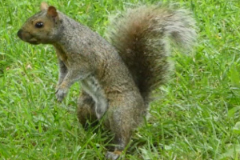

The latin name Sciurus is derived from Greek words "skia" (shadow) and "oura" (tail). It means an animal sitting in the shadow of its tail.
The animal has predominantly gray fur, but optionally can have a brownish color. It has a usual white underside and a large bushy tail. It keeps food in many small deposits for later recovery.